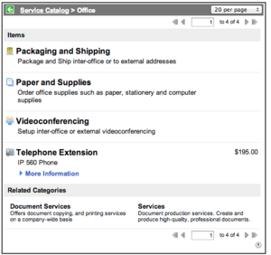
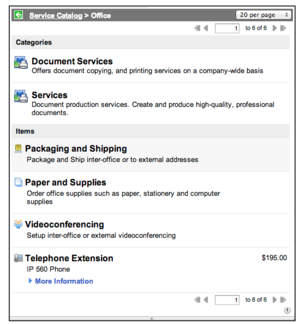
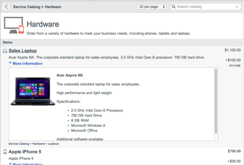
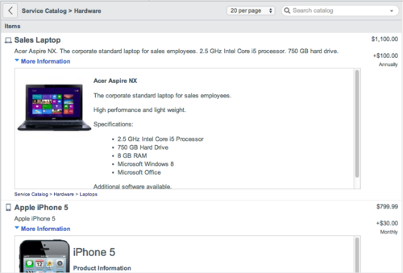
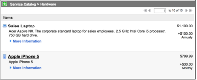
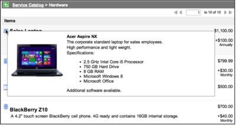
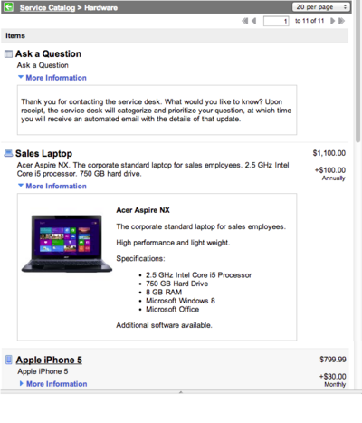
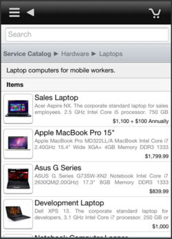
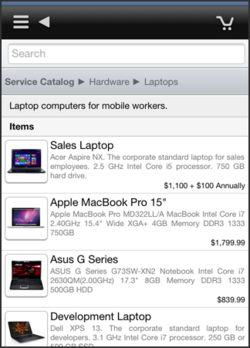

Service Catalog Categories
| |
Note: This article applies to Fuji and earlier releases. For more current information, see Service Catalog Categories at http://docs.servicenow.com
The ServiceNow Wiki is no longer being updated. Visit http://docs.servicenow.com for the latest product documentation. |
Contents
1 Overview
Categories organize service catalog items into logical groups. Categories can have a parent-child relationship, such as IT and Laptops. A child category is a subcategory of its parent category. Each catalog item, order guide, record producer, content item, and subcategory appears as a single item within the category.
{kind=link}
Administrators and catalog administrators can create and configure categories, defining their characteristics and adding content such as catalog items to them.
| |
Note: If there are no active items in a category's hierarchy, that category does not appear in (and cannot be added to) the catalog. Users with the admin or catalog_admin roles can see all categories, regardless of the number of active items. Configure the glide.sc.category.canview.override property to change this behavior. |
2 Creating Categories
To create or edit a category:
- Navigate to Service Catalog > Catalog Definition > Maintain Categories.
- A list of existing categories appears. If the Parent field is blank, the category does not have a parent category.
- Click New or select the category to edit.
- Fill in the fields on the Category form (see table).
- Click Submit or Update.
{kind=link}
| Field | Description |
|---|---|
| Title | The descriptive name for the category. |
| Parent | Any parent category for which this category is a subcategory. |
| Catalog | The catalog this category belongs to. |
| Active | A check box for indicating whether the category is available to add to the service catalog homepage. |
| Location | Any location information relevant for the category. |
| Header icon | The icon displayed beside the category header, when the category is a top-level category. |
| Icon | The small icon displayed beside the category name, when the category is listed as a subcategory. |
| Roles | Roles permitted to view this category. Leave the field blank, or use the role public, to allow access for all users. Category-level access restrictions may be overridden by restrictions on the individual items within that category. |
| Description | Information about the category. The description appears when the category is collapsed on the service catalog homepage. The description also appears in the Related Categories list when a user clicks the parent category title. |
| Homepage image | A larger image to display with the category on the service catalog homepage. This is visible only if the relevant renderer defines it to be used (the default renderer does not display this). |
| Mobile Subcategory Render Type | The rendering option to control how subcategories are displayed. Select List for a single-column list, or Cards for a multi-column display. Available starting with the Dublin release. |
| Hide description (mobile browsing) | Option for displaying the description at the top of the list on mobile devices. Available starting with the Dublin release. |
| Mobile Image | A picture to use on mobile devices for this category. If a mobile image is not selected, the Homepage image appears if the Mobile Subcategory Render Type is set to Cards. Available starting with the Dublin release. Supported formats for mobile images are .jpg, .png, .bmp, .gif, and .ico and should be 72px X 73px. |
2.1 Applying User Criteria to Categories
You can apply user criteria to a category, defining which users can and cannot access that category.
| |
Note: The user criteria restriction applies only within Service Catalog for the specific item it is applied for. However, the user criteria restriction is not applied outside the Service Catalog where the user has access to the item via the table. |
- In a category record, navigate to the Available For or Not Available For related lists.
- Click Edit to add an existing user criteria record, or click New to create a new one.
- Save the record to associate the user criteria record with the category.
| |
Note: The Not Available For settings override Available For settings. A user on the Not Available For list for a category cannot access that category, even if that user is also on the Available For list for that category. |
3 Configuring Category Appearance Using Properties
You can use service catalog properties to configure the appearance of categories within a service catalog.
Navigate to Service Catalog > Catalog Policy > Properties to access service catalog properties.
3.1 Displaying Subcategories in a Panel
By default, when viewing a category, subcategories are displayed in a panel at the bottom of the screen.
To display categories as a list at the top, set the In category view display subcategories in a panel property (glide.sc.use_sub_cat_section) to No.
| If the property is set to Yes, the subcategories appear in a panel at the bottom. | If the property is set to No, the subcategories appear as a list at the top. |
|  |  |
{kind=link}
{kind=link}
3.2 Hiding Category Descriptions
By default, when viewing a category, descriptions are displayed at the top of the screen.
To hide this description, set the Show category descriptions in the category view page property (com.glide.servicecatalog.view_includes_category_descriptions) to No.
| If the property is set to Yes, the description appears. | If the property is set to No, the description does not appear. |
|  |  |
{kind=link}
{kind=link}
3.3 Showing Item Details Using Pop-up Icons
By default, users can view item details using a More information link, which expands the item details below the item.
To display these details in a pop-up window when users point to the item icon, set the When browsing a category use the pop-up icon to show item details (glide.sc.cat_view_use_popup_for_details) property to Yes.
| If the property is set to No, the item details appear when you click More information. | If the property is set to Yes, the item details appear as a pop-up when you point to the item icon. |
|  |  |
{kind=link}
{kind=link}
3.4 Showing Item Details in Collapsible Sections
By default, if not showing item details in pop-up windows, the first two items listed in the category display have the More Information section expanded to display item details.
To change the number of items with this information expanded, set the Number of Catalog Items to expand in browsing and search when not using pop-up icons to view details (glide.sc.auto_expand) property to the number required.
| Expanding to 2 items: | Expanding to 1 item: |
|  | 
|
{kind=link}
3.5 Limiting Description Sizes in Mobile UI
By default, item descriptions in the smartphone interface are truncated to a maximum of two lines.
To display full descriptions, set the Limit descriptions in category and item listings to two rows in the Mobile UI property (glide.sc.mobile.limit.description) to No.
| If the property is set to Yes, descriptions are limited to two lines. | If the property is set to No, the full descriptions are given. |
|  |  |
{kind=link}
{kind=link}
4 Configuring Dynamic Categories
Dynamic categories display commonly-requested items and knowledge articles on the right side of the service catalog homepage by default. Use dynamic categories to provide users with an access option that automatically adjusts to changing request trends.
To configure dynamic catalog categories:
- Navigate to Service Catalog > Catalog Definition > Maintain Dynamic Categories.
- Select New or open an existing dynamic category.
- Fill in the fields on the Dynamic category form, as appropriate.
The Dynamic category form contains many of the same fields as the Category form. Additional fields are:
| Field | Description |
|---|---|
| Type | The kind of items to display. Can be Requested Items or KB Articles. |
| Search how long? | For catalog items only, the period during which to search for the most common requests. For example, enter 7 00:00:00 to display the most commonly requested items in the previous seven days. |
| Number of Entries | The number of items to display in the dynamic category. |
| |
Note: The results displayed are limited to those items or knowledge articles available in the currently-viewed catalog. |